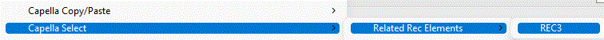
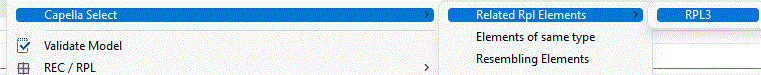

REC-RPL Advanced Features
Management of Composition of REC-RPL
We are going to see how to use libraries and REC-RPL composition in order to create a set of elements based on library elements and data types through an example.
- Create a library to define the data types and elements types

For this example, we call it
lib_cps to express it's a library dedicated to define some components.
- Add some data types and create a physical node component
Board containing the following physical attributes


- In the tree, select the component
Board, choose
'REC / RPL > Create a REC from selection'

In the REC creation window, the component and its children are automatically added to the REC.
Notice the message "REC have references to external elements", an additional window shows the elements that will not be instantiated in the destination model. Any RPL of the to be created REC Board will be linked to these elements
Remark: it is possible to add these external elements in the REC by pressing the button
 and selecting them. In that case, these elements will be considered as “part of” the created REC and any RPL will have its own data types.
and selecting them. In that case, these elements will be considered as “part of” the created REC and any RPL will have its own data types.

Now we are going to create a Rack compound by two replicas of Board.
- Create a physical node component
Rack

- In the tree, right click on
Rack and choose
'REC/RPL > Instantiate a RPL from a REC'

Then select
REC_Board and add the suffix _1 and validate twice with no modifications.

Repeat the operation another time to create a second
Board on the
Rack
Remark: is it possible to place the newly created RPL into the directory
REC Catalog / RPL to ease the reading of the model.

Notice the message "REC have references to external elements", the button trigger an additional window allowing to select from the elements linked to the REC elements which elements will be linked to elements of the RPL.
- In the tree, right click on
Rack and choose
'REC/RPL > Create a REC from selection’


- Two choices are possible to create the REC Rack:
- Simple REC linked to all elements viewed in the wizard, which will happen by clicking directly on OK (same process than REC Board creation, not detailed below)
- Pro: Simple way to create a REC
- Con: If Board is more complicated than a self-contained component, (allocated functions, interfaces), some elements will not be included if they weren’t selected when creating the REC_Rack, even if they are part of an existing RPL.
- Con: If Board evolves by adding other elements, these elements will not be added automatically to the REC_Rack and its RPL. You will have to update manually REC_Rack to include these new elements.
- Compound REC, where REC Rack is only a Component Rack with two Replica of Board (whatever elements are included in Board) (detailed below)
- Pro: all elements of a Replica of Board will be included automatically, even if REC_Board is updated
For both
Board, select the related RPL like below. In the main dialog, RPL are added and components Board are now colored in purple, meaning that a related RPL have been added to the REC. These elements will be also added at RPL instanciation


At end of the wizard, created
REC_Rack is linked to the Rack and both RPL of
Board


- In a model with dependencies to the
lib_cps:

Create a RPL of the
REC_Rack in Physical System


In the model, a component Rack has been created and two RPL of boards.

Note: There is no component Board created. Both replica should have been created and initialized after the instantiation of the RPL_Rack. This is a current limitation of the tooling, but it should not be the case.
For both RPL of Board, an “Update selected RPL from its REC” must be triggered. Once these Board have been initialized, another “Update selected RPL from its REC” on the RPL_Rack can be necessary if there is elements linking the two Board. (which is not the case here)


We have now a full RPL of Rack

From elements of a model, it would be possible to create a REC into a referenced library.
Elements will be copied into the library and become a REC and initial selected elements will be considered as a RPL of the REC stored in the library.
This feature is not available yet
It is possible to select all elements of a given REC that are displayed on a diagram.
To do so, select a source element from the REC, right click "Capella Select > Related REC Elements > REC"
This will set the current selection to all this REC source elements, that are displayed on the diagram

It is possible to select all elements of a given RPL that are displayed on a diagram.
To do so, select an element from the RPL, right click "Capella Select > Related RPL Elements > RPL"
This will set the current selection to all this RPL elements, that are displayed on the diagram
This is particularly useful to copy/paste a layout from a REC to its RPLs
